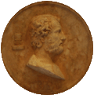

главная  персоналии
персоналии  Эсхин
Эсхин
главная |

Личность в историикраткая энциклопедияПроект «Личность в истории» посвящен людям — современникам грандиозных исторических событий, носителям редких качеств или людям, взгляды которых опередили их время. |
|||||||||||||||||||
Коротко |
Статьи |
Персоналии |
Литература |
||||||||||||||||
Эсхин |
|||||||||||||||||||
|
«Хорошо, когда рассудительность оратора помогает ему выбрать наилучшие решения, а его образованность и красноречие убеждают слушателей. Если оба эти качества не соединены в одном человеке, то благоразумие всегда следует предпочесть красноречию». Эсхин, «Речи» |
 Диск с профильным портретом Эсхина. Мрамор. Римская работа. II в. Эрмитаж. |
||||||||||||||||||
Биографическая справкаЭсхин (390–314 гг. до н. э.), греческий оратор и политический деятель из Афин, демагог. Сын учителя. В начале жизненного пути служил писцом. Эсхин выступал на стороне Македонского царя Филиппа против Демосфена. Эсхин считал, что Македония может стать той силой, которая объединит Грецию. Его главный противник — Демосфен, напротив, отстаивал демократические принципы правления и независимость греческих государств, видел в Филиппе узурпатора. Будучи одним из наиболее ярких ораторов своего времени, Эсхин боролся с Демосфеном в своих публичных выступлениях. Этот спор нашел отражение в речах Эсхина (например «Против Тимарха», «О вероломном посольстве» и «Против Ктесифона»). Партия сторонников Македонии, к которой принадлежал и Эсхин, в итоге одержала победу, а Демосфен вынужден был бежать, будучи обвиненным в финансовых махинациях. Хронология
Цитаты«Демократия расцвела и опять усилилась, но явились самозванные граждане, которые постоянно привлекали войну за войной… Идею демократии они уважали только в своих льстивых речах, а своими поступками старались нарушить мир, благодаря которому сохраняется демократия, и вызывали войны, вследствие чего демократия ниспровергается.» (Эсхин) «Безопасность граждан демократического государства и его политический строй охраняют законы.». (Эсхин) «Именно потому, что люди совершают неподобающие поступки, древние и установили, в конце концов, свои законы». (Эсхин) Список литературы
|
|||||||||||||||||||
|